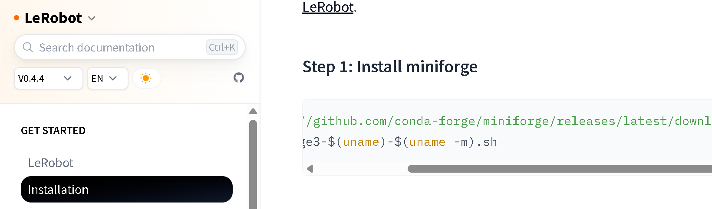
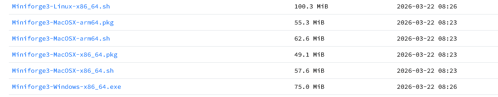

如果有梯子直接访问lerobot官网下载教程进行下载，跳过下列步骤，注意下载0.4.4的版本
https://huggingface.co/docs/lerobot/v0.4.4/en/installation

已有conda环境可跳过
通过清华镜像站下载 https://mirrors.tuna.tsinghua.edu.cn/github-release/conda-forge/miniforge/LatestRelease/（任选windows-x86_64版本即可）

在 git bash 中依次执行以下命令：
# 创建虚拟环境
conda create -y -n lerobot python=3.10
# 激活虚拟环境
conda activate lerobot
# 克隆仓库（版本 0.4.4）
git clone -b 0.4.4 https://github.com/huggingface/lerobot.git
# 进入目录
cd lerobot
# 以可编辑模式安装
pip install -e .
连接同构机械臂的数据线和节卡机械臂网线，确定同构机械臂对应的端口号和节卡机械臂的ip
修改test_motor.py中对应配置部分并运行，测试主臂舵机数据能否正常读取并转换为jaka关节数据，实现同步的遥操作
修改lerobot_teleoperator_jaka_teleop/lerobot_teleoperator_jaka_teleop/config_jaka_teleop.py中的PORT为主臂对应实际端口号
修改test_teleop.py中的SLAVE_IP为对应节卡机械臂的实际ip，运行并测试能否正常校准与遥操作
record.py中修改录制配置部分（从臂ip，相机配置，任务描述，一次采集时长等）
运行record.py，连接成功后按回车进行主从臂校准，等待运动完成后按回车开始本次数据采集
若多次进行录制得到多个数据集，可以运行dataset_merge.py进行数据集合并（更改对应数据集目录）
若有huggingface平台账号且可以访问，可以将数据集进行上传
云服务器上参照之前lerobot环境配置说明进行配置
ACT训练lerobot原生已支持，参考lerobot官方教程的act训练命令：
lerobot-train \
--dataset.repo_id=${HF_USER}/your_dataset \
--policy.type=act \
--output_dir=outputs/train/act_your_dataset \
--job_name=act_your_dataset \
--policy.device=cuda \
--wandb.enable=true \
--policy.repo_id=${HF_USER}/act_policy
以ACT为例
将云服务器上的模型训练文件pretrained_model文件夹传输到本地和机械臂连接的设备上，修改act_model.py中对应配置运行即可